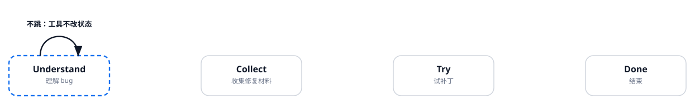
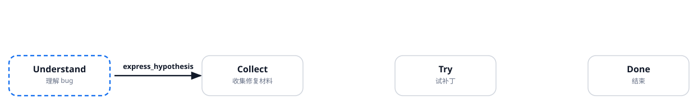
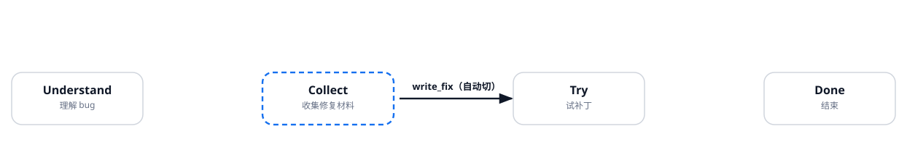
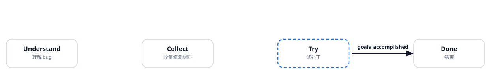

课上 Experiment 打开这一页。数字只覆盖这一题，不是论文 Table III。
四个框始终在。虚线 = 本轮开始时所在状态。加粗箭头 = 满足条件后走的那条边，其余隐去。工具表只列当前静态官方 prompt 里的命令。论文 Fig.2 的 Understand 列的是 run_tests / extract_tests / FL；我们跑的代码把 read_range 放进 Understand，测试焊在 write_fix 里。
失败测试两条 NPE：3D testIntersectionNotIntersecting，2D testIntersectionParallel。定位是两处 omission：SubLine.java#114 和 #118。
read_range还在 Understand。先读 3D 的 intersection。read_range 不改状态，所以自环。
虚线框 = 本轮开始时所在状态。加粗箭头 = 本轮走的边。没走的边隐去。

本态可用工具（官方 prompt，不是论文 Fig.2 那一列）
| 工具 | 干什么 | 本轮 |
|---|---|---|
extract_test_code | 抽失败测试的源码 | |
express_hypothesis | 写下假设，跳到 Collect | |
read_range | 读一段源码 | 本轮用了 |
模型 thoughts（原文）
The bug is a NullPointerException in SubLine.intersection methods for both 3D and 2D cases. The stack traces indicate that the NPE occurs when calling Line.toSubSpace, which internally calls getAbscissa. This suggests that the intersection method is not handling the case where lines are parallel or not intersecting properly, possibly returning null or not checking for null before calling toSubSpace. To understand the exact code, I need to read the relevant lines in both SubLine.java files. I'll start by reading the 3D SubLine.java around line 114 and the 2D SubLine.java around line 118.
参数： threed/SubLine.java 100–130
工具返回： 读到 Vector3D v1D = line.intersection(subLine.line); 下一行立刻 toSubSpace(v1D)，中间没有 null 检查。
read_range假设还没写。继续读 2D，确认是同一处漏检查。仍留在 Understand。
虚线框 = 本轮开始时所在状态。加粗箭头 = 本轮走的边。没走的边隐去。

本态可用工具（官方 prompt，不是论文 Fig.2 那一列）
| 工具 | 干什么 | 本轮 |
|---|---|---|
extract_test_code | 抽失败测试的源码 | |
express_hypothesis | 写下假设，跳到 Collect | |
read_range | 读一段源码 | 本轮用了 |
模型 thoughts（原文）
The 3D SubLine.intersection method calls line.intersection(subLine.line) which may return null if the lines are parallel or not intersecting. Then it immediately calls line.toSubSpace(v1D) without checking if v1D is null, leading to NullPointerException. The fix should be to check if v1D is null and return null early. Similarly, the 2D version likely has the same issue. I need to read the 2D SubLine.java to confirm.
参数： twod/SubLine.java 100–130
工具返回： 2D 同样：Vector2D v2D = line1.intersection(line2); 然后 toSubSpace(v2D)，没有 null 检查。
express_hypothesis材料够了。express_hypothesis 的条件成立，Understand → Collect。
虚线框 = 本轮开始时所在状态。加粗箭头 = 本轮走的边。没走的边隐去。

本态可用工具（官方 prompt，不是论文 Fig.2 那一列）
| 工具 | 干什么 | 本轮 |
|---|---|---|
extract_test_code | 抽失败测试的源码 | |
express_hypothesis | 写下假设，跳到 Collect | 本轮用了 |
read_range | 读一段源码 |
模型 thoughts（原文）
Both 3D and 2D SubLine.intersection methods call line.intersection() which can return null when lines are parallel or not intersecting. They then immediately use the result without null check, causing NullPointerException. The fix is to add a null check after computing the intersection point and return null if it's null. This is a simple fix.
参数： null after line.intersection() → NPE in toSubSpace(); add null check
工具返回： Command express_hypothesis returned: state changed from 'collect information to understand the bug' to 'collect information to fix the bug'.
write_fix没有再搜仓库。直接 write_fix。官方实现会自动切到 Try，并跑测试。
虚线框 = 本轮开始时所在状态。加粗箭头 = 本轮走的边。没走的边隐去。

本态可用工具（官方 prompt，不是论文 Fig.2 那一列）
| 工具 | 干什么 | 本轮 |
|---|---|---|
search_code_base | 按关键词搜仓库 | |
get_classes_and_methods | 列出文件里的类和方法 | |
extract_similar_functions_calls | 找相似调用 | |
extract_method_code | 抽出某个方法 | |
write_fix | 写补丁并自动测，跳到 Try | 本轮用了 |
read_range | 再读一段源码 | |
AI_generates_method_code | 另写一个方法体 |
模型 thoughts（原文）
I have a clear hypothesis: the intersection methods in both 3D and 2D SubLine classes do not check if the result of line.intersection() is null before using it, leading to NullPointerException. The fix is to add a null check and return null if the intersection point is null. I will now implement this fix in both files.
参数： insert null-check at 3D:114 and 2D:118
工具返回： 0 failing test cases. Note: automatically switched to 'trying out candidate fixes'.
写进去的补丁：
threed/SubLine.java:114 if (v1D == null) return null;twod/SubLine.java:118 if (v2D == null) return null;goals_accomplished测已经绿了，但还在 Try。模型自己喊 goals_accomplished，才进 Done。绿不会自动结束。
虚线框 = 本轮开始时所在状态。加粗箭头 = 本轮走的边。没走的边隐去。

本态可用工具（官方 prompt，不是论文 Fig.2 那一列）
| 工具 | 干什么 | 本轮 |
|---|---|---|
write_fix | 再写一版补丁 | |
read_range | 再读代码 | |
go_back_to_collect_more_info | 退回 Collect | |
discard_hypothesis | 丢掉假设，退回 Understand | |
goals_accomplished | 喊下班，进入 Done | 本轮用了 |
模型 thoughts（原文）
The fix was applied successfully and all test cases passed. The null check added to both 3D and 2D SubLine.intersection methods resolved the NullPointerException. The bug is fixed.
参数： null check fixed NPE; all tests passed
工具返回： agent 停。plausible=yes，goals_accomplished=true。
对照：同一题的课堂 CR-loop 1 轮就写出同一个 null check。RA 多出来的 4 轮是读文件、写假设、再喊 Done。